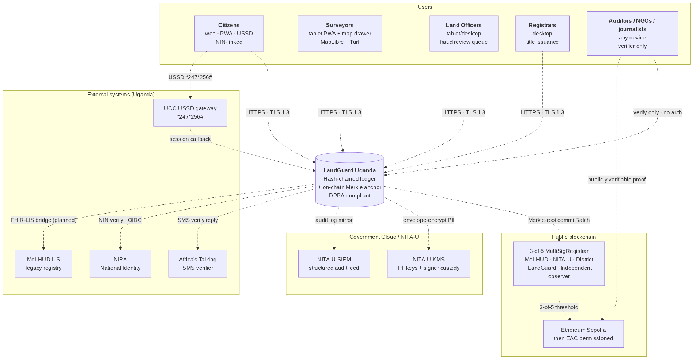
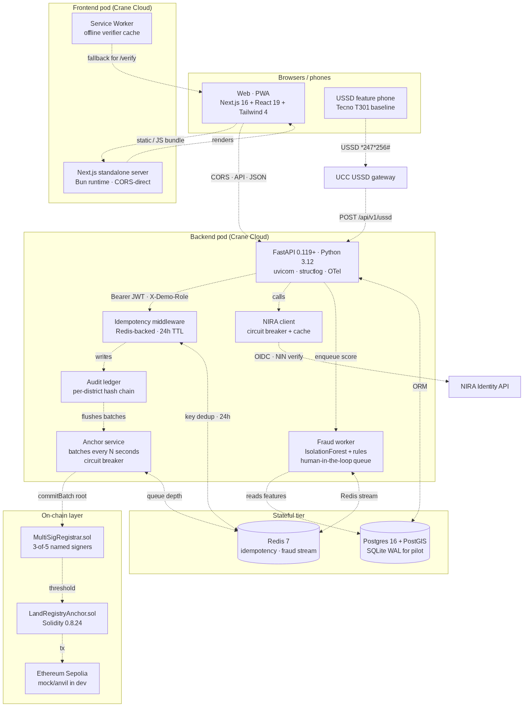
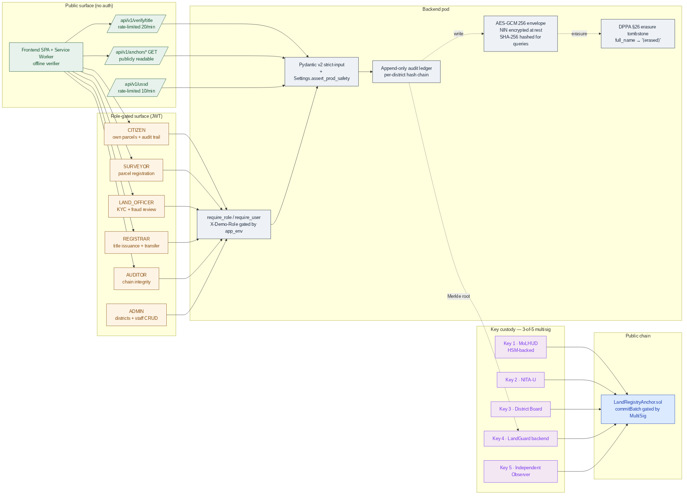
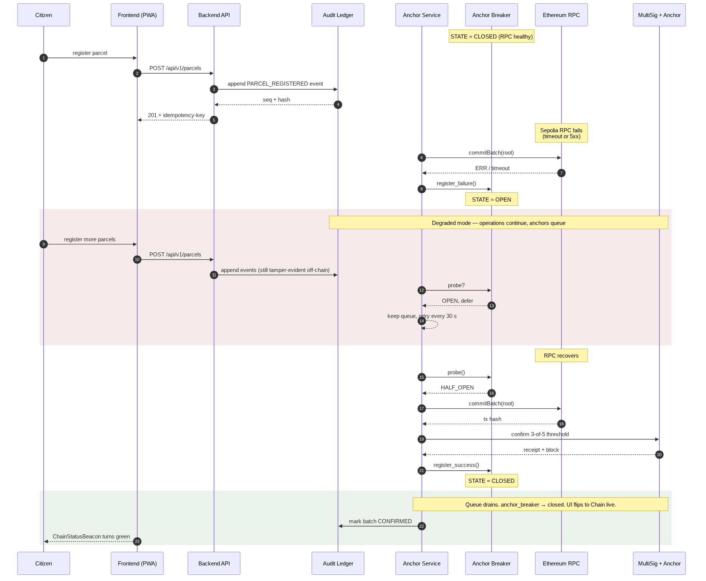

Thematic Area: #2 — Land Administration & Titling Support Licence: Apache-2.0 Repository: https://github.com/mpairwe7/LandGuardUganda (open-source, public from day one) Live deploy: https://landguard-frontend-3d8aba74.renu-01.cranecloud.io · backend https://landguard-backend-d1e66f33.renu-01.cranecloud.io Submission date: 26 May 2026 Showcase event: 25 June 2026 · Serena Conference Centre, Kampala
LandGuard Uganda is a sovereign, open-source, dual-layer land registry designed for adoption by the Ministry of Lands, Housing & Urban Development (MoLHUD) and NITA-U. It pairs a per-district hash-chained audit ledger with an on-chain Merkle anchor, so every land title — issuance, transfer, KYC, dispute — can be verified independently by any citizen, journalist, lender, or court, anywhere in the world, with or without trust in LandGuard itself.
The system addresses the structural problem that roughly 60 % of Uganda's land has unclear or contested ownership by making the registry publicly verifiable rather than relying on institutional trust alone. A single QR scan on a printed title yields a Merkle proof; a 247256# USSD dial verifies the same title from a feature phone. Forgery is detectable in milliseconds; tampering with the registry is computationally infeasible without breaking a public blockchain.
LandGuard is production-grade by construction: 3-of-5 multi-signature custody of the on-chain registrar role (MoLHUD, NITA-U, district board, LandGuard, independent observer); AES-GCM 256 envelope encryption of NIN at rest with DPPA-2019 §26 erasure tombstones; circuit breakers on every external dependency; an idempotency middleware on every unsafe POST; a fraud-detection pipeline that requires human affirmation before any title is FROZEN (no auto-freeze invariant, documented in docs/AI_ETHICS_CHARTER.md).
The platform is ready for the Mityana pilot in October 2026 and is engineered to scale to all 130 districts and ~32 million NIN-bearing citizens without architectural rewrite. The MOU draft with Mityana District Land Board is in docs/moa-templates/.
LandGuard serves five distinct audiences through one backbone:
| Audience | Surface | Authentication | Primary use |
|---|---|---|---|
| Citizens | Mobile-first PWA · USSD *247*256# · SMS |
NIN + OTP (production: NIRA OIDC) | Verify any title; view own parcels; receive transfer notifications |
| Surveyors | Tablet PWA with MapLibre + Turf overlap detection | Staff IdP (production: Keycloak/NITA-U OIDC) | Draw parcel polygons; submit boundaries with real-time conflict checks |
| Land Officers | Tablet / desktop | Staff IdP, role-scoped to district | KYC NIN-verification queue; fraud-review queue with explainable AI |
| Registrars | Desktop | Staff IdP, REGISTRAR role | Title issuance; transfer approval; manual anchor flush |
| Auditors / NGOs / journalists / lenders | Any device — /verify is public, no login |
None | Verify any title; inspect the audit chain; consume on-chain Merkle proofs |

Figure 1 — System context. The auditor / citizen path on the right is publicly verifiable without any LandGuard credential.
The architecture is dual-layer:
Off-chain hash-chained ledger (backend/app/audit/) — every event (PARCEL_REGISTERED, TITLE_ISSUED, TRANSFER_*, KYC_VERIFIED, DISPUTE_*, FRAUD_HUMAN_AFFIRMED) is appended to a per-district SQLite-WAL/Postgres ledger with seq, prev_hash, payload_hash, row_hash. Tamper-evident by construction; an auditor can re-walk the chain and verify integrity in seconds.
On-chain Merkle anchor (contracts/LandRegistryAnchor.sol) — every N seconds the anchor service builds a Merkle root from the unanchored events of each district and commits it via the 3-of-5 MultiSigRegistrar. The root lives on Ethereum Sepolia (pilot) and is committable to any EAC-region permissioned chain at national rollout (ADR-0003).
The dual-Merkle regime (ADR-0001) is the cryptographic bridge: events are hashed with SHA-256 off-chain for ergonomic verification by any HTTP client; the same leaves are re-hashed with Keccak-256 sorted-pair Merkle for on-chain proof verification by MerkleProof.verify. The two trees are bridged by keccak(sha256_hex_leaf), formally equivalent and cross-tested in CI between Python and TypeScript implementations.
| Feature | Value to MoLHUD / Citizen |
|---|---|
| Public Merkle-proof verifier | Any phone, any browser, any USSD line can verify a title independently of LandGuard. Forgery becomes computationally infeasible the moment a batch confirms on-chain. |
| 3-of-5 multi-sig registrar | No single party — not even LandGuard — can commit a title. Five named signers: MoLHUD, NITA-U, district board, LandGuard backend, independent observer. Custody documented in docs/CUSTODY.md. |
| Hash-chained per-district ledger | Tamper-evident off-chain. Every state change has a verifiable predecessor hash. Auditor console walks the chain end-to-end in seconds. |
| Real-time polygon overlap detection | Surveyor draws on MapLibre; Turf.js flags geometry conflict with existing parcels before submission. Reduces boundary-dispute downstream load. |
| Human-in-the-loop fraud detection | IsolationForest + explicit rules (watchlist, rapid resale, duplicate NIN, geo-distance outlier). No auto-FREEZE invariant: only FRAUD_HUMAN_AFFIRMED transitions a title to FROZEN. Officers must record a clinical reason. |
| DPPA-2019 §26 right-to-erasure | NIN is AES-GCM-256 encrypted at rest with a hashed surrogate for queries. Erasure replaces full_name and re-keys the encrypted blob, leaving a tombstone audit event. Implementable per citizen request within ≤72 h. |
| DPPA-2019 §19 breach notification | Runbook in docs/runbooks/dppa-breach-notification.md — trigger criteria, hour-by-hour 72-h timeline, decision tree, role separation, PDPO + citizen-SMS templates, quarterly drill cadence. |
| Offline-aware public verifier | Service worker pre-caches /verify, the Merkle proof bundle, and the on-chain root. A citizen with a printed title can verify it offline against the last-known root. |
| USSD + SMS verifier | Public *247*256# shortcode + SMS shortcode reach citizens without smartphones. Same Merkle proof, same verdict. |
| Resilience-by-design | Circuit breakers on RPC and NIRA. Anchor-service queues during chain outage; UI flips ChainStatusBeacon to "queued" — issuance never blocks on chain health. Demonstrated in Act 5 of the showcase storyboard. |
| English + Luganda stubbed | Verifier page is the first locale-aware surface; Luganda working draft pending native-speaker review before pilot. Architecture scales to Lusoga / Runyankole / Luo / Acholi without code change. |
| Layer | Choice | Rationale |
|---|---|---|
| Frontend | Next.js 16 (App Router, RSC, PWA), TypeScript strict, Tailwind 4, Zustand, TanStack Query, MapLibre + Turf, IndexedDB | Stateless, low-bandwidth, offline-capable public verifier; locally re-staffable from Makerere CoCIS and MUST graduates |
| Backend | FastAPI 0.119+, Python 3.12+, Pydantic 2, async SQLAlchemy 2, structlog | Async I/O for high concurrency on modest Crane Cloud hardware; strict schemas reject malformed input at ingress |
| Database | SQLite WAL (pilot single-district) → PostgreSQL 16 + PostGIS (regional+) | Pilot uses the simplest possible store; PostGIS scales to nationwide geometry queries |
| Cache & queue | Redis 7 | Idempotency-key cache (24 h), fraud-scoring Redis stream, anchor-queue depth metric, rate-limit token buckets |
| Smart contracts | Solidity 0.8.24, Foundry; OpenZeppelin v5 access-control + ECDSA + MerkleProof | Audit-grade, tested with forge test --gas-report, ready for CERT-UG-accredited review |
| On-chain | Ethereum Sepolia (pilot, gas-free testnet) → EAC permissioned chain (national, ADR-0003) | Permissionless for transparency; permissioned for cost predictability at national scale |
| Observability | OpenTelemetry (FastAPI, SQLAlchemy, Redis, HTTPX), structlog JSON logs, Prometheus metrics | SIEM-ready out of the box (Loki, Splunk, Elastic, Wazuh); audit ledger doubles as security telemetry |
| Deployment | Docker Compose for local dev; Crane Cloud RENU cluster for staging + pilot; Kubernetes-ready (12-factor) | Runs on-premise or in NITA-U Government Cloud; CI/CD pipeline documented in docs/CRANE_CLOUD_DEPLOYMENT.md |

Figure 2 — Container topology. The browser→backend direct CORS path is required because Crane Cloud RENU pods have no outbound internet egress (verified empirically — see docs/CRANE_CLOUD_DEPLOYMENT.md §9).
The architecture is documented through three Architecture Decision Records (ADR-0001 dual-Merkle regime, ADR-0002 zero-trust posture with Uganda extensions to NIST SP 800-207, ADR-0003 EAC chain migration path) plus six proposed ADRs that close documented residual risks before pilot.
The security posture is falsifiable — every claim maps to a verifiable file or live endpoint in the repository.
| Concern | Control | Evidence |
|---|---|---|
| Data sovereignty (NITA-U) | Runs on Crane Cloud RENU (Makerere AI Lab) or in NITA-U Government Cloud; no PII leaves Uganda | docs/CRANE_CLOUD_DEPLOYMENT.md §10 Trust assumptions |
| DPPA-2019 (article-by-article) | §3 → §34 mapped to code or operational control | docs/STANDARDS_ALIGNMENT.md; docs/audit/THREAT_MODEL.md |
| Authentication | JWT (HS256 dev → RS256+JWKS via NIRA OIDC in production); pyjwt 2.12+; rate-limited login; Settings.assert_prod_safety() refuses dev defaults in APP_ENV=production |
backend/app/auth/jwt_auth.py; backend/app/config.py:114 |
| Authorisation | 6-role hierarchy (CITIZEN < SURVEYOR < LAND_OFFICER < REGISTRAR < AUDITOR < ADMIN) enforced at every endpoint via require_role(...); X-Demo-Role escape hatch hard-gated to app_env != "production" |
backend/app/auth/dependencies.py; matrix in routers |
| Audit & accountability | Append-only audit_events per district with seq / prev_hash / payload_hash / row_hash; emitted as structlog JSON for SIEM; best-effort — audit failures never crash user requests (Prometheus audit_failure_total) |
backend/app/audit/ledger.py |
| On-chain integrity | Every anchored batch confirmable independently via MerkleProof.verify on Sepolia; root + tx_hash + block_number returned by /api/v1/anchors (public, no auth) |
contracts/src/LandRegistryAnchor.sol; /api/v1/anchors/title/{title_no}/proof |
| Custody — multi-sig | 3-of-5 MultiSigRegistrar.sol gates commitBatch; backend key is one signer; co-signer daemon runs the other four during pilot until HSM custody is finalised |
contracts/src/MultiSigRegistrar.sol; docs/CUSTODY.md; backend/scripts/co_sign_daemon.py |
| PII at rest | NIN encrypted with AES-GCM 256 (backend/app/crypto.py); SHA-256 surrogate for queries (nin_hash); per-pod KMS-managed key at production tier |
backend/app/crypto.py; backend/app/db/migrations/001_init.sql |
| Right to erasure (DPPA §26) | audit/ledger.py::erasure_tombstone() replaces full_name + re-keys encrypted NIN; emits tombstone audit event; full audit chain remains verifiable |
backend/app/audit/ledger.py:278 |
| Breach notification (DPPA §19) | PDPO 72-hour timeline; trigger criteria, decision tree, role separation, PDPO + citizen-SMS templates, quarterly tabletop drill | docs/runbooks/dppa-breach-notification.md |
| Threat model | STRIDE per asset; out-of-scope statement; pentest scope sized at UGX 17–23 M | docs/audit/THREAT_MODEL.md; docs/audit/PENTEST_SCOPE.md |
| Dependency vulnerability mgmt | Weekly Dependabot (uv + npm + actions + docker); OSV-Scanner in CI; CycloneDX 1.5 SBOM per release (backend + frontend + contracts) | .github/dependabot.yml; evidence/sbom/ |
| Pentest | CERT-UG-accredited / Makerere CSL preferred vendor; engagement window Aug 2026; 14-day remediation buffer before Oct 2026 pilot | docs/audit/PENTEST_SCOPE.md §5 |
Zero-trust posture (ADR-0002): NIST SP 800-207 seven tenets mapped, with three Uganda extensions — sovereignty (no PII leaves Uganda), cryptographic accountability (every privileged action is anchored), and least-privilege custody (no single signer can commit). The audit chain is the security telemetry; even if Crane Cloud's control plane lied, the cryptographic integrity claims hold.

Figure 3 — Trust zones. The chain is a separate boundary from LandGuard; no single party — not even LandGuard itself — can commit a title.
| Dimension | Pilot (Mityana, 1 district) | Regional (10 districts) | National (130 districts) |
|---|---|---|---|
| API replicas | 1 × (1 vCPU, 1 GB) on Crane Cloud | 4 × (2 vCPU, 2 GB) | 16 × (4 vCPU, 4 GB), HPA-enabled |
| Database | SQLite WAL on persistent volume | Postgres 16 + PostGIS primary + replica | Patroni 3-node + PgBouncer, partitioned by district |
| Redis | Single node (fallback to in-memory) | Sentinel HA | Sentinel HA + cluster |
| Chain | Sepolia testnet | Sepolia + EAC permissioned bridge | EAC permissioned chain (ADR-0003) |
| Estimated monthly cost (Crane Cloud) | ~ UGX 220 k | ~ UGX 1.8 M | ~ UGX 14 M |
Operational SLOs: API availability 99.5 % monthly; p95 latency < 300 ms (verifier reads), < 800 ms (title issuance writes); RPO 15 min / RTO 60 min; 0 unrecoverable audit-log rows (anchor chain provides infinite-retention proof of every event); 0 unauthenticated transfers (multi-sig invariant).
Resilience patterns are first-class and demonstrated live in the Act 5 showcase storyboard:
breaker_state exposed in /readyz and the frontend ChainStatusBeacon.A reproducible resilience demo runs in 30 seconds: POST /api/v1/demo/rpc-kill → titles continue issuing, anchors queue, beacon turns amber. POST /api/v1/demo/rpc-restore → queue drains, beacon returns to green. Runbook in DEMO_RUNBOOK.md.

Figure 4 — Resilience under chain outage. Sequence is reproducible live in the showcase via the demo control panel.
LandGuard is Ugandan by design, not by translation:
UG-<district>-<parcel-number>/<year>) as Universal Parcel Identifier — Uganda's MoLHUD format, baked into the data model.Three measurable impact commitments for the 12-month Mityana pilot, with methodology in docs/IMPACT_EVIDENCE.md:
Sustainability: pilot cost UGX 820 M; national-tier operating cost ~ UGX 14 M / month — well within a single MoLHUD ICT line item. Open-source under Apache-2.0 with a formal multi-stakeholder governance model (ADR-0002 §7) that gives a DPO veto on privacy invariants and an independent-observer veto on multi-sig key generation — protecting the system's integrity guarantees after donation to MoLHUD.
Capacity-building commitments: monthly engineering office hours; annual CoCIS / MUST internship cohort; quarterly NITA-U technical sessions on the dual-Merkle pattern; annual open hackathon for new MoLHUD modules (boundary disputes, mortgage attestation, inheritance workflow).
| Window | Milestone |
|---|---|
| Pre-showcase (now → 25 Jun 2026) | Lighthouse / axe-core baselines published; demo dataset seeded; mobile responsiveness pass shipped; CI/CD green; Crane Cloud staging stable |
| Pre-pilot (Jul → Sep 2026) | CERT-UG / Makerere CSL pentest; DPIA external review; MoU signature with Mityana District Land Board; 3-of-5 HSM key generation; NIRA live-client integration (post-NIRA 2026 API spec ratification); Sepolia → mainnet-test cutover |
| Pilot (Oct 2026 → Sep 2027) | Mityana single-district pilot; measure the three impact commitments; quarterly restore drills + DPPA §19 tabletop |
| Regional (Oct 2027 → Dec 2028) | Expand to 10 districts (Wakiso, Kampala Central, Gulu, Mbale, Mbarara, Jinja, Lira, Masaka, Fort Portal, Soroti); EAC permissioned chain bridge (ADR-0003) |
| National (2029 → 2031) | Full 130-district rollout; replace Sepolia with EAC chain; bi-directional MoLHUD LIS sync; mortgage / inheritance modules |
LandGuard Uganda is ready for the showcase walkthrough and for pilot deployment in October 2026 subject to MOU signature and NIRA-live integration. The platform is:
LandGuard is the open backbone Uganda needs to give every citizen a title that anyone can verify, end the structural epidemic of duplicate and contested ownership, and make the land-administration system that 60 % of the country's GDP rests on falsifiable by anyone with a phone. We invite the MoICT&NG Technical Evaluation Panel to verify every claim above against the open repository, and we welcome the opportunity to partner with MoLHUD and NITA-U to deliver this digital public infrastructure to every Ugandan.
Contact for the panel: see docs/TEAM.md and MAINTAINERS.md. Email mpairwelauben75@gmail.com.
Verification entry point: docs/SHOWCASE_EVALUATION_MAPPING.md — every claim in this document maps to a primary-evidence file with a reviewer-runnable verification command. The full audit dossier (docs/audit/CODEBASE_MAP.md, THREAT_MODEL.md, PENTEST_SCOPE.md, AUDIT_PACKAGE.md) is in the repository's docs/audit/ directory.